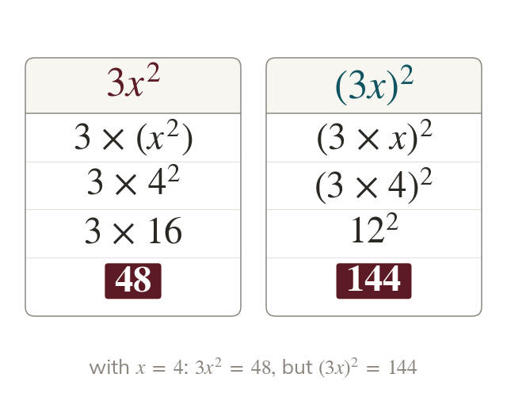

The index attaches to what it directly follows
An index attaches only to the letter or bracket it follows. means : the is not squared. squares the whole term:
An index attaches only to the letter or bracket it follows, so means - the coefficient is NOT raised to the power. is different: the bracket means the whole term is squared: